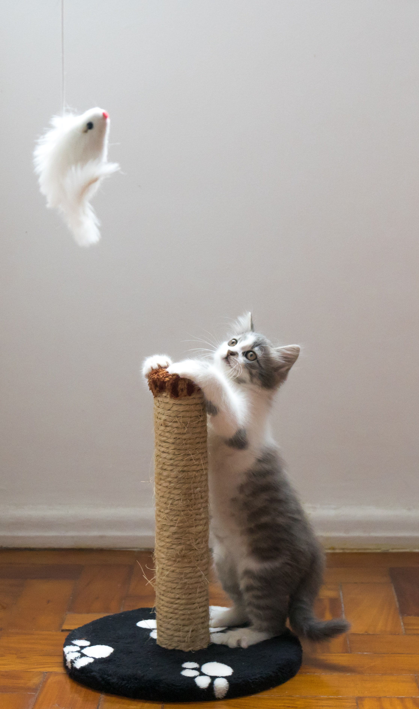
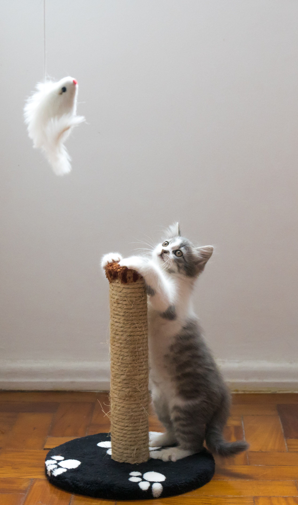

고양이
한자로는 묘(猫)라 하고, 수고양이를 낭묘(郎猫), 암고양이를 여묘(女猫), 얼룩고양이를 표화묘(豹花猫), 들고양이를 야묘(野猫)로 부르기도 한다. 현재 집에서 기르고 있는 모든 애완용 고양이는 아프리카·남유럽·인도에 걸쳐 분포하는 리비아고양이(Felis silvestris lybica)를 사육 순화시킨 것으로, 전세계에서 2억 마리가 넘게 사육되는 것으로 알려져 있다. 약 5,000년 전 아프리카 북부 리비아산(産)의 야생고양이가 고대 이집트인에 의해 길들여져서 점차 세계 각지에 퍼졌다고 한다. 이것은 고대 이집트의 벽화 ·조각, 고양이의 미라 등으로 미루어 명확<하지만, 그것이 현재 사육되는 모든 고양이의 조상인지는 의문이다. 고양이를 죽이거나, 소중히 다루지 않으면 불행을 당하게 된다는 민화(民話)는 동양의 여러 나라뿐 아니라 유럽 ·아프리카 등지에도 있다. 고양이의 가축화가 현저히 발달한 고대 이집트에서는 고양이는 신성한 동물이었다. 또한 고양이가 시체를 뛰어넘으면 시체가 움직인다고 하여 고양이를 시체 가까이 두지 않는 풍습도 있으며 고양이에 관한 미신은 많다. 고양이의 거동을 사물의 전조(前兆)로 보는 습관은 세계적인 현상이다. 국제고양이협회(The International Cat Association, TICA)에 의하면 공식적으로 인정된 고양이 품종은 2018년 기준 71종이다. 우리나라에서는 흔히 볼 수 있는 토종 고양이 ‘코리안 쇼트헤어’가 있다. ‘참고양이’라고도 하는 코리안 쇼트헤어는 미국의 길고양이인 ‘아메리칸 쇼트헤어’를 본떠 이름 지어졌으며, 줄여서 ‘코숏’이라 부르기도 한다. 코리안 쇼트헤어의 역사는 명확히 밝혀지지 않았으나, 5~6세기경 가야 토기에 새겨진 고양이의 모습과 9세기경 신라 왕궁 주변에서 발견된 고양이 뼈를 미루어 삼국시대 때부터 존재한 것으로 본다. [네이버 지식백과] 고양이 [domestic cat] (두산백과)
머리가 둥글고 얼굴은 짧고 넓으며, 눈이 둥글고 커서 양안시(양쪽 눈의 망막에 맺힌 대상물을 각각이 아닌 하나로 보게 하고, 입체적으로 보게 하는 눈의 기능)의 능력이 뛰어나다. 귓바퀴는 작은 삼각형 모양으로 끝에 긴 털이 있으며 몸에는 다양한 무늬가 있다. 몸길이는 보통 30~60cm이며 몸무게는 2~3kg부터 7.5~8.5kg에 이르기까지 다양하다. 꼬리는 종류에 따라 길이가 다르며 보통은 22~38cm 정도이다. 발가락은 앞다리에 5개, 뒷다리에 4개가 있으며 발톱을 살 속에 감출 수 있다. 야생의 고양이가 길들여져 가축화되었으며, 야생 고양이는 산림 속에서 산다. 1년에 2~3회 번식하며 한배에 4~6마리의 새끼를 낳는다. 쥐, 작은 조류, 개구리 등을 잡아먹는다. [네이버 지식백과] 고양이 [cat] (국립중앙과학관 - 포유류·양서·파충류 정보, 김인규, 이한수)
귀엽다.
 
